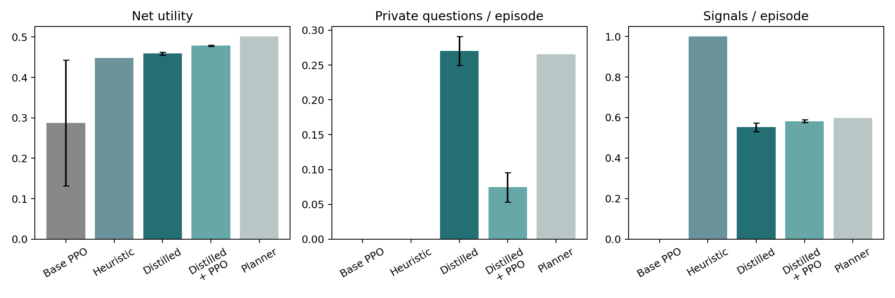
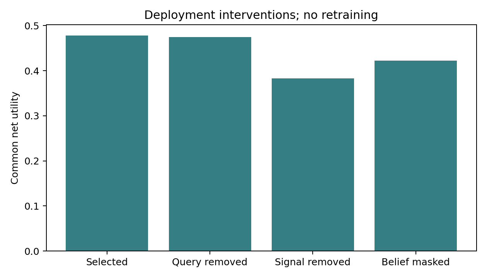

This follow-up began after inspection of the original results. Development-selected method: distilled_ppo. Original records are preserved. Evaluation uses 64 new numerical settings across four previously used document contexts. These are not new historical events or previously unseen source documents.
Action values from a public-belief planner were distilled into a small policy network. Neither training nor inference inputs contain the actual opponent type. The learned policy does not call the planner at evaluation time, but training uses known transition rules and additional teacher computation. This is not an equal-budget model-free learning comparison or a new algorithm. The Sol utterance/interpretation bank is unchanged, with no new model calls.

Error bars show standard deviations across three training seeds. The heuristic and planner are fixed policies.
| net_utility | agreement | queries | signals | cost | length | acceptance_violations | |
|---|---|---|---|---|---|---|---|
| policy | |||||||
| Heuristic | 0.44830 | 0.97344 | 0.00000 | 1.00000 | 0.10291 | 3.11719 | 0.0 |
| Planner | 0.50125 | 0.91844 | 0.26562 | 0.59891 | 0.08637 | 3.06883 | 0.0 |
| Planner_no_query | 0.49339 | 0.91562 | 0.00000 | 0.59297 | 0.08354 | 2.85234 | 0.0 |
| base | 0.28743 | 0.53750 | 0.00000 | 0.00000 | 0.03863 | 1.71962 | 0.0 |
| distilled | 0.45903 | 0.85565 | 0.27021 | 0.55196 | 0.10462 | 3.69200 | 0.0 |
| distilled_ppo | 0.47833 | 0.86600 | 0.07465 | 0.58257 | 0.09372 | 2.82292 | 0.0 |
| distilled_ppo_masked_belief | 0.42200 | 0.82726 | 0.07743 | 0.58628 | 0.12791 | 2.99965 | 0.0 |
| distilled_ppo_no_query | 0.47467 | 0.87109 | 0.00000 | 0.59826 | 0.09866 | 2.80686 | 0.0 |
| distilled_ppo_no_signal | 0.38263 | 0.79567 | 0.21219 | 0.00000 | 0.07819 | 2.51774 | 0.0 |
The selected policy achieves net utility 0.47833 (seed SD 0.00166). On the same new numerical evaluation, its gains are +0.19090 over the original PPO and +0.03003 over the strong heuristic. Disabling signals reduces mean net utility by 0.09570; masking updated beliefs reduces it by 0.05633. The improvement is therefore associated mainly with selective signaling and use of information from opponent responses.
Use of costly queries remains limited. Only 3 of the three selected seeds use queries, and query removal reduces mean net utility by 0.00366. Query use is not resolved across all seeds. These interventions perturb policy inputs or outputs; they are neither a complete causal decomposition nor comparisons against retrained alternatives.
| method | seed | net_utility | queries | signals |
|---|---|---|---|---|
| distilled | 17 | 0.47030 | 0.20833 | 0.47125 |
| distilled | 29 | 0.46174 | 0.20469 | 0.45359 |
| distilled | 43 | 0.46372 | 0.28156 | 0.44266 |
| distilled_ppo | 17 | 0.47606 | 0.11458 | 0.43125 |
| distilled_ppo | 29 | 0.47894 | 0.07292 | 0.49094 |
| distilled_ppo | 43 | 0.47264 | 0.09375 | 0.47656 |

{
"selected": "distilled_ppo",
"mean_gain_over_base": 0.19090390625000003,
"mean_gain_over_heuristic": 0.03002717013888888,
"selected_minus_no_query": 0.003663454861111112,
"selected_minus_no_signal": 0.09570095486111116,
"selected_minus_masked_belief": 0.056330555555555564,
"positive_query_value_cases": 64,
"all_context_settings": 256,
"query_removal_loss_on_positive_value_cases": 0.015351736111111115,
"query_removal_loss_on_other_cases": -0.000232638888888889,
"gap_to_planner": 0.02292087673611111,
"no_new_api_calls": true,
"main_results_unchanged": true,
"audited_episodes": 61416,
"audited_turns": 175310,
"integrity_checks_passed": true
}Query and signal removal exclude the corresponding action and select the next-highest learned action score. Belief masking replaces the posterior with the initial prior while retaining other public state variables. These are deployment interventions, not retrained ablations. Positive query value is defined by the utility difference between the public-belief planner and its query-disabled counterpart.
This directory retains the protocol, teacher data, learning curves, six checkpoints, all evaluation trajectories, per-seed results, matched comparisons, and successful query examples. This report records the experiment stage; the current manuscript is in ../paper/main.pdf.